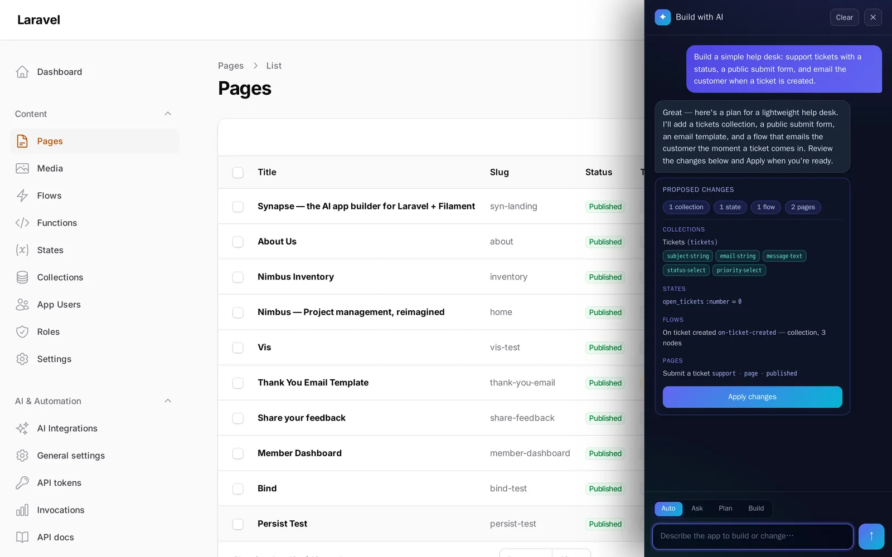
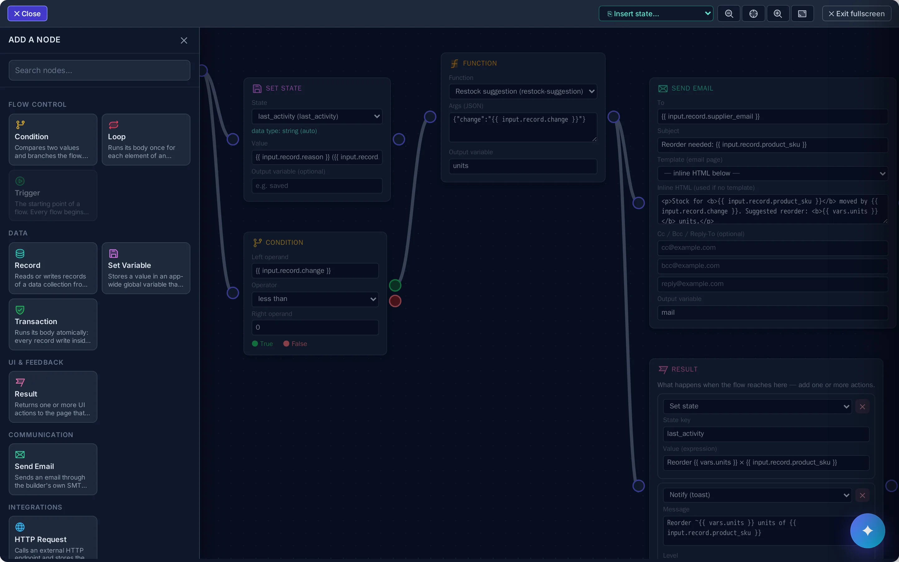
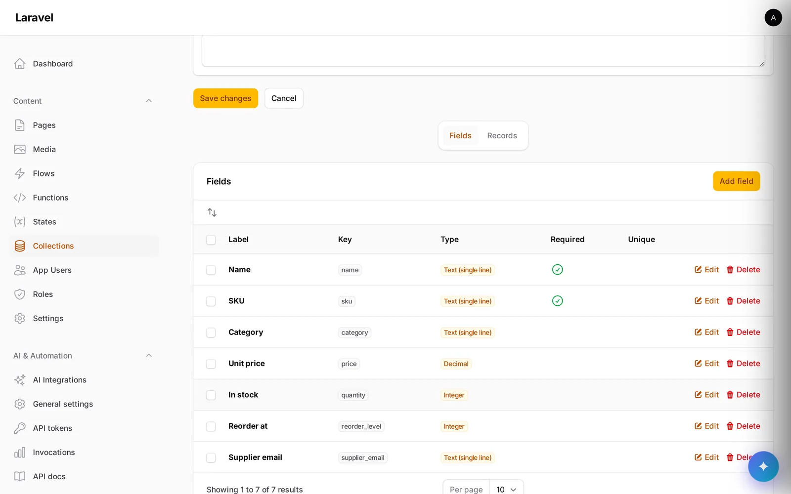

Visual Pages
Drag, drop and style real pages in a GrapesJS canvas — then bind them to live data and publish.
Describe an app. Watch it get built. Then refine it by chatting. Synapse is a full-stack, low-code builder that runs inside your own Filament admin — pages, data, flows, auth and email, all generated and editable.
$ composer require andrecorugda/synapse
Seven pillars that compose into real software. Visual where you want it, code where you need it, AI across all of it.
Drag, drop and style real pages in a GrapesJS canvas — then bind them to live data and publish.
Define your own database tables in the UI and get an instant, secured REST API over every one.
Wire triggers to actions on a node canvas — automate workflows without leaving the admin.
Write functions and reactive state that drive your pages and flows — logic that updates the UI live.
End-user accounts with roles and row-level permissions — secure who sees and edits which records.
Send transactional and templated email straight from flows and functions — no extra wiring.
An assistant that answers, plans and builds whole apps — and refines them as you keep chatting.
Real screens from a running Synapse install — the visual builder, the AI companion, the flow engine and your data, all inside the Filament panel you already run.
Drag sections and components into a live GrapesJS canvas, style them in place, then bind them to your data and publish — no separate front-end project to maintain.

Chat in plain language and Synapse proposes collections, pages, flows and settings as a reviewable plan — apply it in one click, then keep refining by chatting.

Wire triggers to actions — set state, call a function, branch on a condition, send email — on an n8n-style canvas. Flows fire on data events, clicks, forms or cron.

Define collections and fields in the UI — Synapse creates real database tables and a secured REST API over every one, ready for your pages, flows and functions to use.

Everything above publishes to polished, responsive pages — a marketing site and a role-gated inventory dashboard, both built entirely in Synapse and bundled as demos you can install with one command.


Four modes, one chat. Switch how much you want the assistant to do — from answering a question to generating an entire app — and apply every change yourself.
Run composer require andrecorugda/synapse in any Laravel + Filament app, migrate, and Synapse mounts itself into your existing admin panel. No new stack to learn.
Compose pages on the GrapesJS canvas, model your data as Collections, and wire logic in the Flow engine — or just tell the AI companion what you want and apply the changes it stages.
Serve your app live from Laravel with its REST API and end-user auth, or export a page to self-contained static HTML for free hosting — exactly how this site was published.
One command adds the whole builder — pages, data, flows, auth, email and the AI companion. Self-hosted, MIT-licensed, yours to keep.
$ composer require andrecorugda/synapse